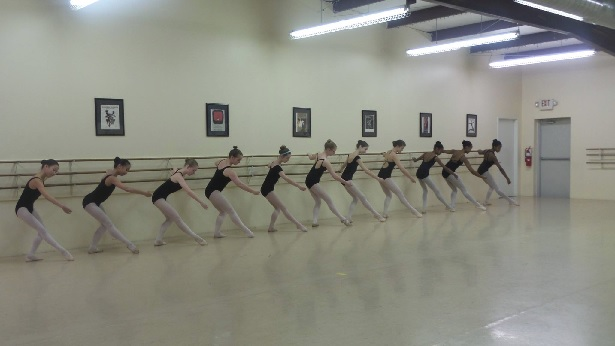
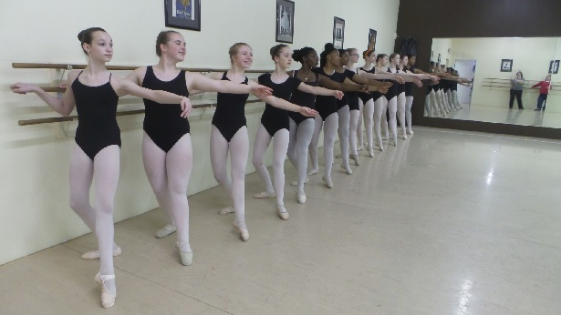

About Us
Founded in 1964, the Pat Brown School of Dancing provides dance instruction to children and adults ages 3 and over, at all skill levels. In addition to training in classical ballet, the School offers a diverse curriculum that includes jazz, tap and acrobatics. Over the last 49 years, the School has developed into one of the premier dance schools in West Tennessee, thanks to the careful guidance and supervision of Director Pat Brown.
Our mission is to provide an environment where learning both dance and life values go hand in hand and where children can become confident in his or her efforts and successes.
We believe ballet is the basis for all dance and that it helps students enhance abilities beyond the physical.
Our program focuses on progressions of skill to ensure student development, providing dance training in a fun and educational manner. Beginner through advanced classes consist of specialized lessons of one dance style, with emphasis on technical training.
FAQS
What are the age limits for Pat Brown School of Dancing?
Students must be three years old by June 1st. There is no age limit for adults, although adult classes are limited.
Why is there a dress code?
There are several reasons for a dress code. When students are dressed alike, it is easier to see mistakes and to make corrections quickly. Students who must wear a specific uniform will take the class more seriously, working harder and playing less. Dress codes also reduce the competition of fashion.
What do primary classes consist of?
Primary classes (under 1st grade) use tap, ballet, acrobatics and creative movement to introduce children to dance, helping them to develop learning skills and coordination. There are three levels of preschool work, each one emphasizing a different style of dance.
How many students are in each class?
The size of classes vary from 8 to 18. Consideration is taken for the age of the student, the level of skill and the experience of the teacher. Assistants are added when a class is large or the students are young.
How are students transferring from another school placed?
All schools do not teach alike and the sequence of skills will differ from one school to the next. Students transferring to our school will take a placement audition to find out how our school can best benefit his or her dance education.